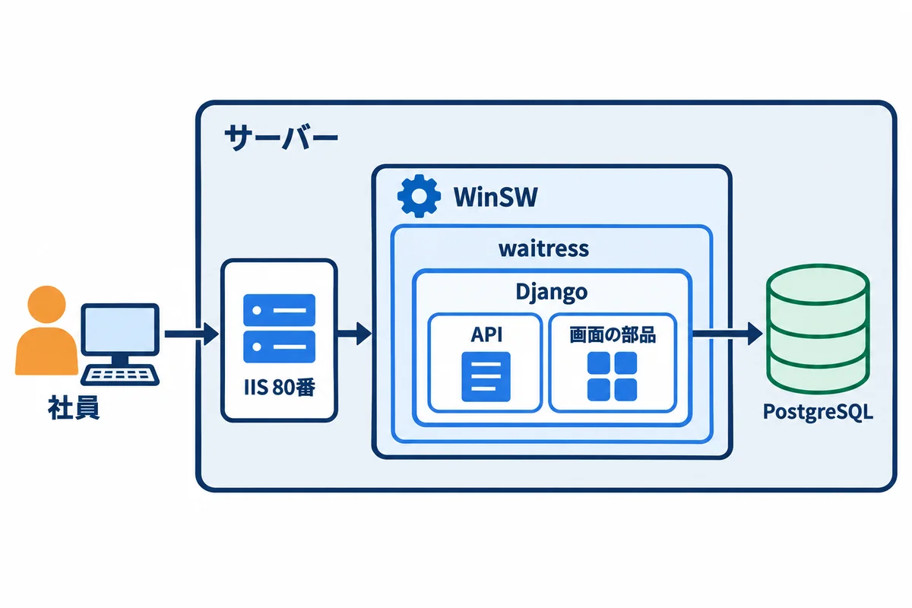
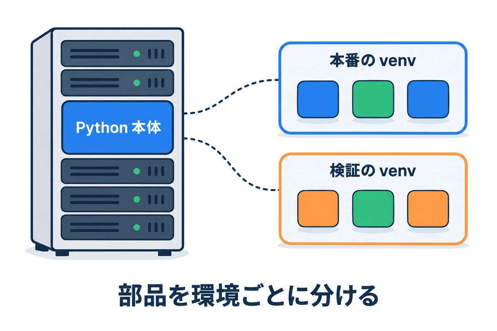
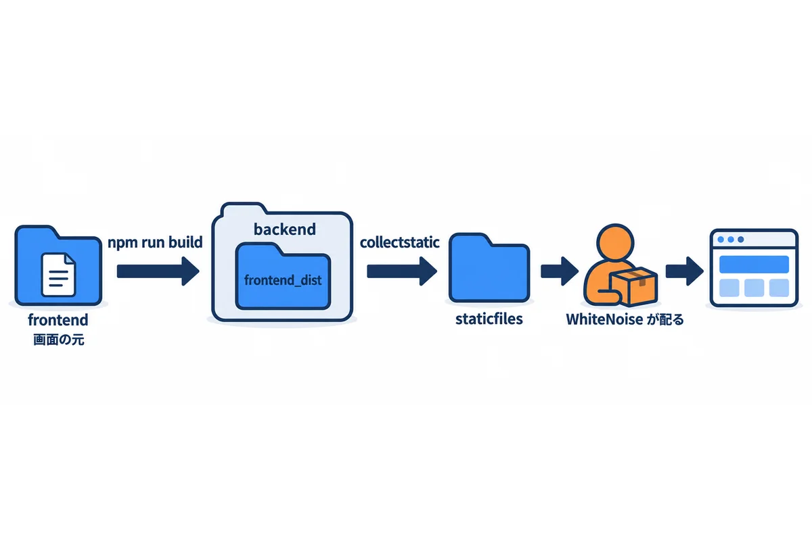
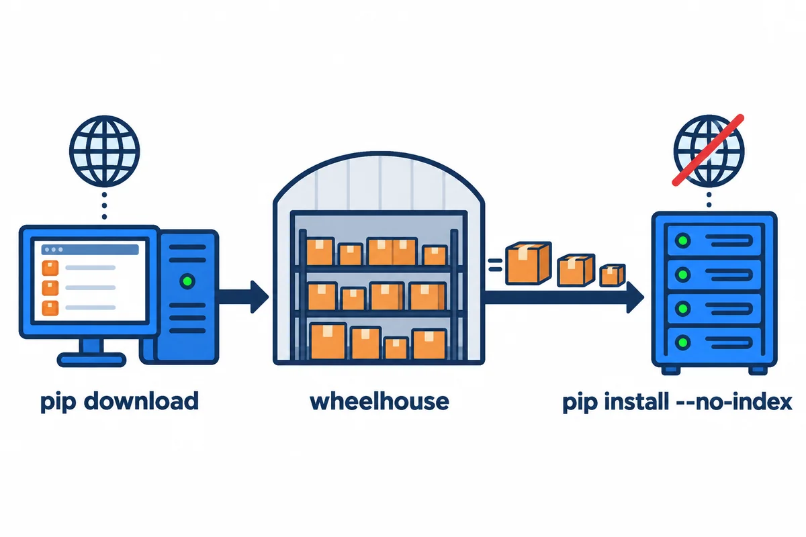
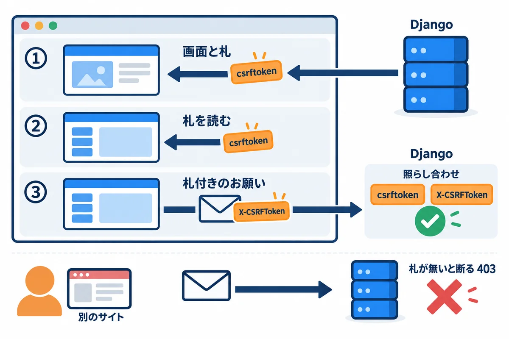
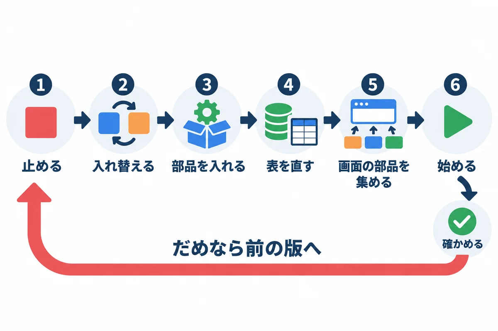

色の付いた枠のコードの、右上の「コピー」ボタンを押してください。コピーしたら、ブラウザーの「戻る」で PDF に戻れます。
04 構築手順（Rust＋Topcoat版）と同じアプリを、Django（Python）と React（JavaScript）で作った場合の手順です。
manage.ps1 は、2026-11-01 に、Python 3.14・Django 5.2.18・waitress 3.0.2・PostgreSQL 18.3 で、実際に動かして確かめました（8.4 の表）。IIS とサービスへの登録は、04 と同じ手順です。| もの | 版 | どこで使う |
|---|---|---|
| Windows Server・PostgreSQL・IIS・URL Rewrite・ARR・WinSW | 04 と同じ | サーバー |
| Python | 3.14 系の最新（Windows 用の 64 ビットのインストーラー） | サーバーと開発用のパソコン |
| Django | 5.2.18（長期サポート版。2028 年 4 月まで安全の修正が出る） | アプリの中 |
| Django REST framework | 3.18.3（API を作る部品） | アプリの中 |
| psycopg | 3.3.6（PostgreSQL につなぐ部品） | アプリの中 |
| waitress | 3.0.2（Windows で動く、Python の Web サーバー） | アプリの中 |
| WhiteNoise | 6.12.0（画面の部品のファイルを、Django から配る部品） | アプリの中 |
| React | 19.3.1 | 画面（開発用のパソコンで作る） |
| Vite | 8.3.5（React の画面をビルドする道具） | 開発用のパソコンだけ |
| Node.js | LTS 版（Vite を動かすため） | 開発用のパソコンだけ。サーバーには入れない |
用語: Django（ジャンゴ：Python で Web アプリを作るための、全部入りのフレームワーク。ログイン・管理画面・データベースの道具が最初から付いている）
用語: React（リアクト：ブラウザの中で画面を組み立てる、JavaScript の部品。03 の 7 章）
用語: ビルド（build：作った元のファイルを、ブラウザやサーバーで動かせる形にまとめて変換すること。React なら、たくさんのファイルを、少ない JavaScript のファイルにまとめる）

| 04 Rust＋Topcoat版 | この資料 Django＋React版 | |
|---|---|---|
| アプリの中身 | webapp.exe 1つ＋assets\ |
Python のコード＋画面の成果物（frontend_dist\・staticfiles\） |
| サーバーに入れる物 | 無し（実行ファイルだけ） | Python（3.14）と、仮想環境（venv）に入れた部品 |
| アプリを動かす物 | webapp.exe 自身 |
waitress（python -m waitress ...） |
| サービスにする道具 | WinSW | WinSW（同じ） |
| 画面の部品の配り方 | アプリが配る | WhiteNoise（Django の中の部品）が /static/ で配る |
| テーブルを作る・直す | アプリの起動のとき（設計例） | manage.py migrate を手で動かす |
| 毎朝 8:00 の処理 | アプリの中の定期処理（設計例） | Django の管理コマンドを、タスク スケジューラで動かす（設計例） |
| HTTP のための設定 | カスタムの TokenStore（04 の 6.4） | SESSION_COOKIE_SECURE = False などの設定（8 章） |
本番と検証の分け方（名前・IIS のサイト・ポート・サービス・データベース）は、04 の 1.2 と同じです（本番 8080・検証 8081）。
04 の 4 章のフォルダに、次を足します。
D:\webapp\
├─ prod\
│ ├─ app\ アプリ（backend\ の中身）
│ ├─ venv\ 本番の Python の仮想環境（部品の置き場） ← 足す
│ ├─ tmp\ 大きな添付ファイルを受け取る途中の一時ファイル ← 足す
│ ├─ service\ WinSW と設定（XML）と manage.ps1
│ ├─ files\ 添付ファイル
│ ├─ logs\ ログ
│ └─ iis\ IIS のサイトのフォルダ（web.config）
├─ stg\ 検証（中身は prod\ と同じ形）
├─ releases\ 持ち込んだ版の zip（webapp-1.0.0.zip など）
├─ backup\ tools\ secrets\ installers\ 04 と同じ
# 足すフォルダを作る（本番と検証）
New-Item -ItemType Directory -Force D:\webapp\prod\venv, D:\webapp\prod\tmp, D:\webapp\stg\venv, D:\webapp\stg\tmp
アプリを動かすアカウントは、04 と同じ仮想アカウント（NT SERVICE\webapp-prod・NT SERVICE\webapp-stg）です。許可は 9.3 で付けます。
04 の 5 章のとおりに入れて、本番と検証のデータベースとユーザーを作ります（lc_messages = 'C' も同じ）。Django は、アプリ用のユーザーでつないで、テーブルを作ります（9.5 の migrate）。
https://www.python.org/downloads/windows/）から、3.14 系の最新の「Windows installer (64-bit)」（python-3.14.x-amd64.exe）を取ってきます。D:\webapp\installers\ に持ち込み、ハッシュ値を確かめます。インストーラーの種類について: Python 3.14 からは、新しい「Python install manager」が勧められていますが、これは人ごとに Python を入れる道具です。サーバーでは、サービスのアカウントからも使えるように、全部のユーザー向けに 1 か所に入れたいので、従来のインストーラー（
python-3.14.x-amd64.exe）を使います。従来のインストーラーは 3.14 では使えますが、Python 3.16 からは出なくなる予定です。そのころには、入れ方を見直します。
python-3.14.x-amd64.exe を、右クリック →「管理者として実行」します。C:\Program Files\Python314 になったことを確かめて、「Install」を押します。& "C:\Program Files\Python314\python.exe" --version
確かめること: Python 3.14.x と出ること。
用語: PATH に追加（コマンドの名前だけで呼べるようにすること。01 の 3.8。サーバーに Python が何個もあると、どれが動くか分からなくなるので、今回は追加しない）

仮想環境（venv）は、Python の部品（Django など）を、環境ごとに分けて入れる箱です。本番と検証で別の venv にしておくと、検証で新しい版の部品を試しても、本番に影響しません。
& "C:\Program Files\Python314\python.exe" -m venv D:\webapp\prod\venv
& "C:\Program Files\Python314\python.exe" -m venv D:\webapp\stg\venv
# venv の中の python で、版を確かめる
D:\webapp\prod\venv\Scripts\python.exe --version
▶ ここで初めて出てくるコード
D:\webapp\prod\venv\Scripts\python.exe（コマンド）: 本番用の仮想環境（venv）の Python を、場所を書いて直接動かす書き方。--versionで版を確かめます。どの Python で動いているかを取り違えないように、場所まで書きます。
確かめること: D:\webapp\prod\venv\Scripts\python.exe があり、Python 3.14.x と出ること。部品は、7 章で持ち込んでから入れます。
用語: 仮想環境（venv。ブイエンブ：Python の部品を、プロジェクトや環境ごとに分けて入れる仕組み。
venv\Scripts\python.exeを使うと、その箱の部品が使われる）
開発用のパソコン（インターネットにつながる）に、次を入れます。
| 道具 | 入れ方 | 何に使う |
|---|---|---|
| Python 3.14 | 公式のページから | Django の開発と、サーバー用の部品の取り寄せ |
| Node.js の LTS 版 | 公式のページ（https://nodejs.org/）から |
React の画面のビルド（Vite を動かす） |
| Git | 公式のページから | ソースの管理 |
用語: LTS（エルティーエス。Long Term Support：長くサポートされる版。会社で使うなら、LTS を選ぶ）
webapp\ ソース一式（Git で管理する）
├─ backend\ Django のプロジェクト
│ ├─ manage.py Django の管理コマンドの入口
│ ├─ requirements.txt 使う部品と版の一覧
│ ├─ config\ 設定（settings.py・urls.py・wsgi.py）
│ ├─ accounts\ アプリの部品（ログインなど。例）
│ ├─ frontend_dist\ ← React の成果物（npm run build で作られる。Git には入れない）
│ └─ staticfiles\ ← 配る部品を集めた物（collectstatic で作られる。Git には入れない）
└─ frontend\ React の画面の元
├─ package.json
├─ vite.config.js
├─ index.html
└─ src\

| 段階 | コマンド | 何が起きるか |
|---|---|---|
| ① React をビルドする | npm run build（frontend\ で） |
frontend\ の元から、backend\frontend_dist\ に index.html と assets\index-（指紋）.js ができる |
| ② 配る部品を集める | python manage.py collectstatic（backend\ で） |
frontend_dist\ と、Django の管理画面の部品が、backend\staticfiles\ に集まる。同時に、縮めた .gz も作られる |
| ③ 配る | （サーバーで動いている間） | WhiteNoise が、/static/... のお願いに、staticfiles\ のファイルを返す。index.html は、Django が画面として返す |
Django==5.2.18
djangorestframework==3.18.3
psycopg[binary]==3.3.6
waitress==3.0.2
whitenoise==6.12.0
版を == で決めておくと、開発用のパソコンとサーバーで、同じ版の部品が入ります。
秘密の値（SECRET_KEY・データベースのパスワード）と、サーバーごとに違う値は、環境変数から読みます。環境変数は、9 章の WinSW の XML に書きます。
"""webapp の設定。秘密の値と、サーバーごとに違う値は、環境変数から読む。"""
import os
import re
from pathlib import Path
BASE_DIR = Path(__file__).resolve().parent.parent
def env(name, default=None):
"""環境変数を読む。無くて、決まりの値も無いときは、起動を止める。"""
value = os.environ.get(name, default)
if value is None:
raise RuntimeError(f"環境変数 {name} がありません")
return value
SECRET_KEY = env("DJANGO_SECRET_KEY")
DEBUG = env("DJANGO_DEBUG", "false").lower() == "true"
# 社員が開く名前（例: webapp-stg.example.local）。IIS が名前をそのまま渡すので、ここに書いた名前だけ受け付ける
ALLOWED_HOSTS = env("DJANGO_ALLOWED_HOSTS").split(",")
CSRF_TRUSTED_ORIGINS = [f"http://{host}" for host in ALLOWED_HOSTS]
INSTALLED_APPS = [
"django.contrib.admin",
"django.contrib.auth",
"django.contrib.contenttypes",
"django.contrib.sessions",
"django.contrib.messages",
"django.contrib.staticfiles",
"rest_framework",
"accounts",
]
MIDDLEWARE = [
"django.middleware.security.SecurityMiddleware",
"whitenoise.middleware.WhiteNoiseMiddleware", # SecurityMiddleware のすぐ後
"django.contrib.sessions.middleware.SessionMiddleware",
"django.middleware.common.CommonMiddleware",
"django.middleware.csrf.CsrfViewMiddleware",
"django.contrib.auth.middleware.AuthenticationMiddleware",
"django.contrib.messages.middleware.MessageMiddleware",
"django.middleware.clickjacking.XFrameOptionsMiddleware",
]
ROOT_URLCONF = "config.urls"
TEMPLATES = [
{
"BACKEND": "django.template.backends.django.DjangoTemplates",
"DIRS": [BASE_DIR / "frontend_dist"], # React の成果物の index.html
"APP_DIRS": True,
"OPTIONS": {
"context_processors": [
"django.template.context_processors.request",
"django.contrib.auth.context_processors.auth",
"django.contrib.messages.context_processors.messages",
],
},
},
]
WSGI_APPLICATION = "config.wsgi.application"
DATABASES = {
"default": {
"ENGINE": "django.db.backends.postgresql",
"HOST": "127.0.0.1",
"PORT": env("DB_PORT", "5432"),
"NAME": env("DB_NAME"),
"USER": env("DB_USER"),
"PASSWORD": env("DB_PASSWORD"),
"CONN_MAX_AGE": 60,
}
}
AUTH_PASSWORD_VALIDATORS = [
{"NAME": "django.contrib.auth.password_validation.UserAttributeSimilarityValidator"},
{"NAME": "django.contrib.auth.password_validation.MinimumLengthValidator"},
{"NAME": "django.contrib.auth.password_validation.CommonPasswordValidator"},
{"NAME": "django.contrib.auth.password_validation.NumericPasswordValidator"},
]
LANGUAGE_CODE = "ja"
TIME_ZONE = "Asia/Tokyo"
USE_I18N = True
USE_TZ = True
# 画面の部品（React の成果物）と管理画面の部品は、WhiteNoise が /static/ で配る
STATIC_URL = "/static/"
STATIC_ROOT = BASE_DIR / "staticfiles"
STATICFILES_DIRS = [BASE_DIR / "frontend_dist"]
STORAGES = {
"default": {"BACKEND": "django.core.files.storage.FileSystemStorage"},
"staticfiles": {"BACKEND": "whitenoise.storage.CompressedStaticFilesStorage"},
}
def _vite_hashed(path, url):
"""Vite が名前に指紋を付けたファイル（例: index-BX3k9a2Q.js）は、ずっとキャッシュしてよい。"""
return re.match(r"^.+[.-][0-9a-zA-Z_-]{8,12}\..+$", url)
WHITENOISE_IMMUTABLE_FILE_TEST = _vite_hashed
# 添付ファイルの置き場所（例: D:\webapp\stg\files）
MEDIA_ROOT = env("DJANGO_MEDIA_ROOT", str(BASE_DIR / "media"))
# 図面の JSON（1 枚 5MB まで）を受け取れるように、本文の上限を 10MB にする（決まりの値は 2.5MB）
DATA_UPLOAD_MAX_MEMORY_SIZE = 10 * 1024 * 1024
# 大きな添付ファイルを受け取る途中で使う、一時ファイルの置き場所（例: D:\webapp\stg\tmp）
FILE_UPLOAD_TEMP_DIR = os.environ.get("DJANGO_TMP_DIR") # 無ければ Windows の一時フォルダ
# メール（Microsoft 365 の SMTP リレー。04 の 10 章）
EMAIL_BACKEND = "django.core.mail.backends.smtp.EmailBackend"
EMAIL_HOST = env("SMTP_HOST", "localhost")
EMAIL_PORT = int(env("SMTP_PORT", "25"))
EMAIL_USE_TLS = True # 25 番でつないでから、STARTTLS で暗号化する
DEFAULT_FROM_EMAIL = env("MAIL_FROM", "noreply@example.com")
EMAIL_TIMEOUT = 30
# HTTP で動かすため、クッキーに Secure を付けない（HTTPS にしたら True にする。参考資料）
SESSION_COOKIE_SECURE = False
CSRF_COOKIE_SECURE = False
SESSION_COOKIE_HTTPONLY = True
SESSION_COOKIE_SAMESITE = "Lax"
# 60 分操作が無ければログアウト（操作のたびに期限を延ばす）
SESSION_COOKIE_AGE = 60 * 60
SESSION_SAVE_EVERY_REQUEST = True
REST_FRAMEWORK = {
"DEFAULT_AUTHENTICATION_CLASSES": ["rest_framework.authentication.SessionAuthentication"],
"DEFAULT_PERMISSION_CLASSES": ["rest_framework.permissions.IsAuthenticated"],
}
# ログは画面（標準出力）に出す。WinSW がファイルに書く
LOGGING = {
"version": 1,
"disable_existing_loggers": False,
"formatters": {"plain": {"format": "{asctime} {levelname} {name} {message}", "style": "{"}},
"handlers": {"console": {"class": "logging.StreamHandler", "formatter": "plain"}},
"root": {"handlers": ["console"], "level": "INFO"},
}
DEFAULT_AUTO_FIELD = "django.db.models.BigAutoField"
# HTTP で動かすために出る、HTTPS 関係の注意だけを黙らせる（HTTPS にしたら、この行を消す）
SILENCED_SYSTEM_CHECKS = ["security.W004", "security.W008", "security.W012", "security.W016"]
▶ ここで初めて出てくるコード
import（Python）: ほかのモジュール（部品）を読み込む書き方。import reで正規表現の道具、from pathlib import PathでPathだけを使えるようにします。from（Python）:from パッケージ import 名前の一部で、「どこから読み込むか」を書きます。from pathlib import Path。def（Python）: 関数を作る書き方。def greet(name: str) -> str:の次の行から、字下げした所が関数の中身です。Python は{ }の代わりに字下げで「どこまでが中身か」を表すので、字下げをそろえることがとても大事です。None（Python）: Python の「値が無い」ことを表す値。調べる時はx is Noneと書きます。if（Python）: Python の条件。if 条件:の次の行から、字下げした所が中身です。a if 条件 else bの形で、1 行の中で値を選ぶこともできます。is（Python）: 「同じ物か」を調べる書き方。if value is None:は「値が無ければ」。Noneと比べる時は==でなくisを使います。raise（Python）: エラー（例外）を起こして、処理を止める書き方。raise TransitionError("…")。呼んだ側はtry … exceptで受け止められます。return（Python）: Python の関数の結果を返して、関数を終える命令。for（Python）: Python のくり返し。for x in 並び:の次の行から、字下げした所が中身です。[式 for x in 並び]の形（内包表記）で、新しいリストを 1 行で作ることもできます。in（Python）:for x in 並び（並びから 1 つずつ）と、値 in 並び（含まれているか）の 2 つの使い方があります。True（Python）: Python の「正しい（はい）」の値。反対はFalse。頭は大文字です（trueではありません）。False（Python）: Python の「正しくない（いいえ）」の値。.resolve()（Python）:Path(__file__).resolve()は、ファイルの場所を、C:\から始まる絶対の場所にするメソッド。.parentで 1 つ上のフォルダになります。.get()（Python）: 辞書（dict）から、キーで値を取り出すメソッド。d.get("port", 8080)は、キーが無ければ 2 つ目の値（無ければNone）を返すので、d["port"]と違ってエラーになりません。.lower()（Python）: 英字を小文字にした文字列を返すメソッド。"True".lower() == "true"のように、大文字小文字をそろえて比べます。.split()（Python）: Python で、文字列を分けてリストにするメソッド。"a b c".split()のように何も渡さないと、空白（いくつ続いても）で分けます。.match()（Python）:re.match(パターン, 文字列)は、文字列の先頭から正規表現に合うかを調べる関数です。合えば、見つかった物が返ります（合わなければNone）。str()（Python）: 値を文字列に変える関数。str(8080)は"8080"。数と文字列は==で比べても等しくならないので、そろえる時に使います。int()（Python）: 文字列などを整数にする関数。int("25")は 25。数でない文字だとValueErrorです。
| 設定 | 意味 | 大事な理由 |
|---|---|---|
ALLOWED_HOSTS |
受け付ける名前 | ここに無い名前で来たお願いは、400 で断られる（8.4 の表の 5） |
CSRF_TRUSTED_ORIGINS |
信頼する送り元 | http:// を付けて書く |
WhiteNoiseMiddleware |
画面の部品を配る | SecurityMiddleware のすぐ後に置く決まり |
TEMPLATES の DIRS |
index.html を探す場所 |
React の成果物の frontend_dist |
STATICFILES_DIRS・STATIC_ROOT |
集める元と、集めた先 | 6.1 の ①→② |
CompressedStaticFilesStorage |
縮めた .gz も作る |
Vite がすでに名前に指紋を付けているので、Django の「指紋を付ける」方式（Manifest）は使わない |
WHITENOISE_IMMUTABLE_FILE_TEST |
指紋の付いた部品を、長くキャッシュさせる | 2 回目からの表示が速くなる。新しい版では名前が変わるので、古い物が使われる心配が無い |
DATA_UPLOAD_MAX_MEMORY_SIZE |
受け取る本文の上限 | 決まりの値（2.5MB）のままだと、5MB の図面の JSON を受け取れない |
SESSION_COOKIE_SECURE・CSRF_COOKIE_SECURE |
クッキーに Secure を付けるか |
HTTP では False にする（8 章） |
SESSION_COOKIE_AGE・SESSION_SAVE_EVERY_REQUEST |
60 分・操作のたびに延ばす | 60 分操作が無いとログアウト |
SILENCED_SYSTEM_CHECKS |
HTTPS 関係の注意を黙らせる | 8.3 |
用語: SECRET_KEY（Django が、クッキーの改ざんを見抜くなどに使う秘密の値。長いでたらめな文字にし、本番と検証で別にする。漏れたら変える）
用語: ミドルウェア（middleware：すべてのお願いと返事が通る、Django の中の関所の列。上から順に通る）
ログインなどの API と、React の画面を返す所の例です。
import json
from django.contrib.auth import authenticate, login, logout
from django.http import JsonResponse
from django.utils.decorators import method_decorator
from django.views.decorators.csrf import ensure_csrf_cookie
from django.views.decorators.http import require_POST
from django.views.generic import TemplateView
from rest_framework.decorators import api_view
from rest_framework.response import Response
@method_decorator(ensure_csrf_cookie, name="dispatch")
class IndexView(TemplateView):
"""React の画面（index.html）を返す。CSRF のクッキーもここで渡す。"""
template_name = "index.html"
def health(request):
return JsonResponse({"status": "ok"})
@require_POST
def login_view(request):
"""ログイン。CSRF の確かめは、Django の CsrfViewMiddleware が行う。"""
data = json.loads(request.body or b"{}")
user = authenticate(request, username=data.get("username"), password=data.get("password"))
if user is None:
return JsonResponse({"detail": "ID かパスワードが違います"}, status=400)
login(request, user)
return JsonResponse({"username": user.get_username()})
@require_POST
def logout_view(request):
logout(request)
return JsonResponse({"ok": True})
@api_view(["GET"])
def me(request):
return Response({"username": request.user.get_username(), "remote_addr": request.META.get("REMOTE_ADDR")})
@api_view(["POST"])
def echo(request):
"""ログイン後の保存の操作の代わり。DRF の SessionAuthentication が CSRF を確かめる。"""
return Response({"received": len(request.body)})
▶ ここで初めて出てくるコード
class（Python）: クラス（データと、それを扱う関数をまとめた設計図）を作る書き方。class Request:の次から、字下げした所が中身です。or（Python）: 「または」。a or bは、aが空（None・""・0 など）ならbを使います。(row.get("番号") or "").strip()は「無ければ空の文字列にしてから空白を取る」。.loads()（Python）: 文字列から読み取るメソッド。tomllib.loads(文字列)は TOML、json.loads(文字列)は JSON を、Python の辞書にします。.get_username()（Django）: Django の利用者から、ログインに使う名前（この資料では社員番号）を返すメソッド。method_decorator()（Django）: 関数用の印（デコレーター）を、クラスの画面（ビュー）のメソッドにも付けられるようにする物。authenticate()（Django）: 名前とパスワードが正しいかを確かめる Django の関数。正しければ利用者（User）を、違えばNoneを返します。login()（Django）: 確かめた利用者を、ログインした状態にする Django の関数（セッションを始める）。login(request, user)。logout()（Django）: ログアウトさせる Django の関数（セッションを消す）。logout(request)。api_view()（Django REST framework）: 関数を、DRF の API の画面にする物。@api_view(["GET", "POST"])のように使います。len()（Python）: 長さ（中身の数）を返す関数。len("abc")は 3、len([1, 2])は 2、len(sys.argv)は「渡された引数の数＋1」です。@method_decorator（Django）:@method_decorator(ensure_csrf_cookie, name="dispatch")をクラスの上に付けて、そのクラスの画面に印を付けます。@require_POST（Django）: 「この画面は POST だけを受け付ける」という印（デコレーター）。GET などで来たら405を返します。ログアウトのように、状態を変える物に付けます。@api_view（Django REST framework）:@api_view(["GET", "POST"])を関数の上に付けて、API にします。決めたメソッド以外は 405 で断られます。
from django.contrib import admin
from django.urls import path, re_path
from accounts import views
urlpatterns = [
path("admin/", admin.site.urls),
path("health", views.health),
path("api/login/", views.login_view),
path("api/logout/", views.logout_view),
path("api/me/", views.me),
path("api/echo/", views.echo),
# それ以外の URL は、React の画面（index.html）を返す。React が画面を切りかえる
re_path(r"^(?!api/|admin/|static/).*$", views.IndexView.as_view()),
]
▶ ここで初めて出てくるコード
.as_view()（Django）: クラスで作った画面（ビュー）を、URL の決まりに登録できる形にするメソッド。path()（Django）: URL と、それに答える画面（ビュー）を結び付ける関数。path("requests/<int:pk>/", views.detail)の<int:pk>は、URL の中の数をpkという名前で受け取ります。re_path()（Django）: 正規表現で URL の決まりを書く関数。re_path(r"^(?!api/|admin/).*$", …)は「api/・admin/で始まらない URL は全部」（React の画面を返す）。
re_path は、「api/・admin/・static/ で始まらない URL は、全部 React の画面を返す」という意味です。React が、URL を見て画面を切りかえます（/requests/123 を直接開いても、画面が出る）。ensure_csrf_cookie で、画面を開いたときに CSRF の札（csrftoken のクッキー）を渡します（8.2）。import { defineConfig } from "vite";
import react from "@vitejs/plugin-react";
export default defineConfig({
plugins: [react()],
// 成果物は Django の /static/ から配られるので、部品の URL の頭を /static/ にする
base: "/static/",
build: {
// 成果物を Django のプロジェクトの中（backend/frontend_dist）に書き出す
outDir: "../backend/frontend_dist",
emptyOutDir: true,
},
server: {
// 開発のときだけ: /api/ を Django の開発用サーバーへ回す
proxy: { "/api": "http://127.0.0.1:8000" },
},
});
▶ ここで初めて出てくるコード
import（JavaScript・TypeScript）: ほかのファイルや部品から、関数などを読み込む書き方。import { rmSync } from "node:fs";は、Node.js のファイルの道具からrmSyncを使えるようにします。from（JavaScript・TypeScript）:import { 名前 } from "場所";の一部で、「どこから読み込むか」を書きます。export（TypeScript）: 「このファイルの外から使ってよい」という印。export type RequestStatus = …と書くと、ほかのファイルでimportして使えます。default（JavaScript・TypeScript）:export defaultは、そのファイルから「いちばんの物」を 1 つ外に出す書き方。読み込む側はimport 名前 from "./ファイル"と、好きな名前で受け取れます。
// Django が渡した csrftoken のクッキーを読む
function csrfToken() {
const m = document.cookie.match(/(?:^|; )csrftoken=([^;]+)/);
return m ? decodeURIComponent(m[1]) : "";
}
// Django の API を呼ぶ。POST などには、CSRF の札（X-CSRFToken）を付ける
export async function api(path, { method = "GET", body } = {}) {
const res = await fetch(path, {
method,
credentials: "same-origin",
headers: {
"Content-Type": "application/json",
...(method !== "GET" ? { "X-CSRFToken": csrfToken() } : {}),
},
body: body ? JSON.stringify(body) : undefined,
});
const data = await res.json().catch(() => ({}));
if (!res.ok) throw new Error(data.detail || `エラー ${res.status}`);
return data;
}
▶ ここで初めて出てくるコード
function（TypeScript）: 関数（ひとまとまりの処理）を作る書き方。function greet(name: string): string { … }は、「文字列のnameを受け取って、文字列を返す関数greet」です。const（JavaScript・TypeScript）: JavaScript・TypeScript で、変えない値に名前を付ける書き方。const db = …;。あとで別の値を入れようとするとエラーになります。return（JavaScript・TypeScript）: JavaScript・TypeScript で、関数の結果を返して、関数を終える命令。async（JavaScript・TypeScript）: JavaScript・TypeScript で、中でawaitを使える関数にする印。結果はPromise（あとで届く約束）で返ります。await（JavaScript・TypeScript）: JavaScript・TypeScript で、時間のかかる処理（Promise）が終わるまで待って、結果を受け取る書き方。asyncの関数の中で使います。undefined（TypeScript）: 「まだ値が入っていない」ことを表す値。?の付いた無くてもよい項目が無い時や、配列の範囲の外を読んだ時に出てきます。catch（TypeScript）:tryの中で失敗した時に動く所。catch (e)のeにエラーが入ります（何が来るか分からないので、使う前に確かめます）。if（JavaScript・TypeScript）: JavaScript・TypeScript の条件。if (条件) { … } else { … }。条件は( )で囲みます。throw（TypeScript）: エラーを起こして、処理を止める書き方。throw new Error("サーバーのエラー")。try … catchで受け止められます。new（JavaScript・TypeScript）: クラスから、新しい物を作る書き方。new DatabaseSync("ba.sqlite")・new Date()・new Error("…")のように使います。.match()（TypeScript）: 文字列が正規表現に合う所を探すメソッド。見つかると、その情報（かっこの中の部分など）を配列で、見つからないとnullを返します。.stringify()（TypeScript）:JSON.stringify(値)は、オブジェクトや配列を、JSON の文字列にする関数です。保存したり、サーバーへ送ったりする時に使います。.json()（JavaScript・TypeScript）:fetchの答え（Response）の本文を、JSON として読んで、オブジェクトにするメソッド。await res.json()。.catch()（TypeScript）:Promiseが失敗した時の代わりの処理を登録するメソッド。res.json().catch(() => ({}))は「JSON として読めなければ空のオブジェクト」。=>（JavaScript・TypeScript）: アロー関数（短く書ける関数）の矢印。(path) => \…${path}`は「path` を受け取って文字列を返す関数」。...（TypeScript）: スプレッド構文。[...requests]は配列の中身を広げて、新しい配列（写し）を作ります。{ ...user, isAdmin: true }は、オブジェクトを写して一部だけ変えます。
base: "/static/" が大事です。 これが無いと、index.html の中の部品の住所が /assets/... になり、Django の 6.4 の re_path が index.html を返してしまうため、画面が真っ白になります（15 章）。api() は、毎回クッキーから札を読み直します。ログインすると、Django が札を新しい物に取りかえるからです（8.4 の表の 9）。用語: CSRF（シーサーフ。Cross-Site Request Forgery：別のサイトから、ログイン中の人のブラウザを使って、勝手に送信させる攻撃。Django は、札（トークン）を照らし合わせて防ぐ）
# ① React をビルドする（frontend フォルダで）
cd C:\work\webapp\frontend
npm ci
npm run build
# ② 配る部品を集める（backend フォルダで）。collectstatic はデータベースにつながないので、仮の値でよい
cd C:\work\webapp\backend
$env:DJANGO_SECRET_KEY = "build-only"; $env:DJANGO_ALLOWED_HOSTS = "localhost"
$env:DB_NAME = "x"; $env:DB_USER = "x"; $env:DB_PASSWORD = "x"
.\.venv\Scripts\python.exe manage.py collectstatic --noinput
▶ ここで初めて出てくるコード
cd（PowerShell）: 「change directory（フォルダを移る）」の略。cd rust-studyで、今いるフォルダの中のrust-studyへ移ります。cd ..は 1 つ上のフォルダへ、cd ~はホームフォルダ（C:\Users\you）へ戻ります。今いる場所は、行の頭のPS C:\Users\you\rust-study>の部分に表示されます。npm ci（Node.js）:package-lock.jsonに書かれたとおりの版で、部品を入れ直すコマンド（node_modulesを一度消してから入れる）。npm installと違い、package-lock.jsonを書きかえないので、いつ・どこで入れても同じになります。npm run（Node.js）:package.jsonのscriptsに書いたコマンドを動かすコマンド。npm run devは開発用のサーバーを起動し、npm run buildは本番用のファイルを作ります。止める時はCtrl＋Cです。.\.venv\Scripts\python.exe（Python の道具）: 仮想環境（.venv）の中の Python を、場所を書いて動かす書き方。.\.venv\Scripts\python.exe ファイル.pyでプログラムを動かし、.\.venv\Scripts\python.exe -m pip install -r requirements.txtで、その仮想環境に部品を入れます。仮想環境を「入る」操作（Activate）をしなくても、確実にその Python が使われます。
確かめること:
npm run build の最後に、../backend/frontend_dist/index.html と ../backend/frontend_dist/assets/index-（指紋）.js が出ること。collectstatic の最後に「〜 static files copied to '…\staticfiles'」と出ること。用語:
npm ci（package-lock.jsonに書かれたとおりの版の部品を、きっちり入れ直すコマンド。ビルドの前に使う）

サーバーはインターネットにつながらないので、pip install で部品を取ってこられません。開発用のパソコンで、サーバー用（Windows の 64 ビット・Python 3.14）の部品のファイルを取り寄せておきます。
cd C:\work\webapp\backend
.\.venv\Scripts\python.exe -m pip download -r requirements.txt -d ..\wheelhouse `
--only-binary=:all: --platform win_amd64 --python-version 3.14 --implementation cp
Get-ChildItem ..\wheelhouse
確かめること: wheelhouse に、次の 9 個の .whl ができること（試した結果）。psycopg_binary-3.3.6-cp314-cp314-win_amd64.whl のように、cp314 と win_amd64 が付いた物があること。
asgiref-3.13.0-py3-none-any.whl
django-5.2.18-py3-none-any.whl
djangorestframework-3.18.3-py3-none-any.whl
psycopg-3.3.6-py3-none-any.whl
psycopg_binary-3.3.6-cp314-cp314-win_amd64.whl
sqlparse-0.6.0-py3-none-any.whl
tzdata-2026.6-py2.py3-none-any.whl
waitress-3.0.2-py3-none-any.whl
whitenoise-6.12.0-py3-none-any.whl
--platform win_amd64 --python-version 3.14 を付けるのは、開発用のパソコンが ARM（Snapdragon など）や別の版の Python でも、サーバー用の部品を取ってこられるようにするためです。asgiref・sqlparse・tzdata は、Django が使う部品で、自動で一緒に取り寄せられます。用語: wheel（ホイール。
.whl：Python の部品を、すぐ入れられる形にまとめたファイル）
用語: wheelhouse（ホイールハウス：wheel のファイルを集めて置いたフォルダ。ネットにつながらない所で
pip install --no-index --find-linksに使う）
cd C:\work\webapp
$ver = "1.0.0"
New-Item -ItemType Directory -Force "out\webapp-$ver" | Out-Null
# アプリ（backend の中身。開発用の venv と、Git の物は入れない）
robocopy backend "out\webapp-$ver\app" /E /XD .venv __pycache__ media /XF *.pyc
# 部品の倉庫
robocopy wheelhouse "out\webapp-$ver\wheelhouse" /E
Compress-Archive -Path "out\webapp-$ver\*" -DestinationPath "out\webapp-$ver.zip" -Force
Get-FileHash "out\webapp-$ver.zip" -Algorithm SHA256
確かめること: zip の中に、app\manage.py・app\frontend_dist\index.html・app\staticfiles\・app\requirements.txt・wheelhouse\*.whl があること。
Django の決まりの設定でも、SESSION_COOKIE_SECURE・CSRF_COOKIE_SECURE は False（付けない）です。ただし、多くの解説や check --deploy は「True にせよ」と勧めます。HTTP で True にすると、ブラウザがクッキーを受け取らず、ログインが続きません（04 の 6.4 と同じ理由）。設定ファイルに False とはっきり書き、理由のコメントを残します。

index.html）を開くと、Django が csrftoken のクッキーを渡す（ensure_csrf_cookie）。api() が、クッキーから札を読む。X-CSRFToken という付け札で札を付けて送る。Django は、クッキーの札と付け札が合っているか、送り元（Origin）が自分の名前（Host）と同じかを確かめる。HTTP では、Django は Origin の http://webapp-stg.example.local と、お願いの Host を比べます。IIS が Host を 127.0.0.1:8081 に書きかえると、この比べ合いの前に、ALLOWED_HOSTS に無い名前として 400 で断られます。04 と同じく、IIS の preserveHostHeader を必ず true にします（10 章）。
check --deploy の注意.\manage.ps1 check --deploy
▶ ここで初めて出てくるコード
.\manage.ps1（PowerShell）: 今いるフォルダのmanage.ps1（この資料で作る、Django の管理コマンドを、本番の設定で動かすための小さなスクリプト）を動かす書き方。.\manage.ps1 check --deployは、本番に出す前の設定の確かめです。
SILENCED_SYSTEM_CHECKS を書く前は、次の 4 つの注意が出ました（試した結果）。どれも「HTTPS にせよ」という意味で、HTTP で動かす今回は当てはまりません。
| 番号 | 意味 |
|---|---|
security.W004 |
HSTS（HTTPS だけを使わせる仕組み）を設定していない |
security.W008 |
HTTP を HTTPS に転送していない |
security.W012 |
SESSION_COOKIE_SECURE が True でない |
security.W016 |
CSRF_COOKIE_SECURE が True でない |
この 4 つだけを黙らせ、ほかの注意は出るようにしておきます。確かめること: System check identified no issues (4 silenced). と出ること。HTTPS にしたら、SILENCED_SYSTEM_CHECKS の行を消して、True に戻します（参考資料）。
IIS（preserveHostHeader=true）から来るのと同じ形のお願いを、waitress に直接送って確かめました（2026-11-01。Django 5.2.18・waitress 3.0.2）。
| # | 試したこと | 結果 |
|---|---|---|
| 1 | /health |
200 |
| 2 | /requests/123（React の画面の URL）を開く |
200 で index.html が返る。csrftoken のクッキーに Secure が付かない |
| 3 | /static/assets/index-（指紋）.js |
200。Cache-Control: max-age=315360000, public, immutable（長くキャッシュ） |
| 4 | 無い部品 /static/assets/nothing.js |
404（index.html は返らない） |
| 5 | Host: 127.0.0.1:8081（IIS が名前を書きかえたとき） |
400（ALLOWED_HOSTS に無い） |
| 6 | ログインを、X-CSRFToken 無しで送る |
403 |
| 7 | ログインを、Origin が違う所から送る |
403 |
| 8 | パスワード違い | 400 と「ID かパスワードが違います」 |
| 9 | 正しくログイン | 200。sessionid のクッキーは HttpOnly・Max-Age=3600・SameSite=Lax、Secure 無し。csrftoken が新しい物に変わる |
| 10 | ログイン後、X-Forwarded-For: 10.1.2.3 を付けて /api/me/ |
200。アプリから見た相手の住所が 10.1.2.3（waitress の --trusted-proxy が効いている） |
| 11 | ログイン後の保存（DRF）を、X-CSRFToken 無しで |
403「CSRF Failed: CSRF token missing.」 |
| 12 | 同じく、X-CSRFToken を付けて |
200 |
| 13 | 6MB の本文 | 200（上限 10MB の内） |
| 14 | 11MB の本文 | 400（上限を超えた） |
| 15・16 | 管理画面のログインのページと、その部品（CSS） | 200 |
# 持ち込んだ zip のハッシュ値を確かめてから、検証の app\ に広げる
Get-FileHash D:\webapp\releases\webapp-1.0.0.zip -Algorithm SHA256
Expand-Archive D:\webapp\releases\webapp-1.0.0.zip -DestinationPath D:\webapp\releases\webapp-1.0.0
robocopy D:\webapp\releases\webapp-1.0.0\app D:\webapp\stg\app /E
# 部品を、検証の venv に、インターネットを使わずに入れる
D:\webapp\stg\venv\Scripts\python.exe -m pip install --no-index `
--find-links D:\webapp\releases\webapp-1.0.0\wheelhouse -r D:\webapp\stg\app\requirements.txt
D:\webapp\stg\venv\Scripts\python.exe -m pip list
▶ ここで初めて出てくるコード
D:\webapp\stg\venv\Scripts\python.exe（コマンド）: 検証用の仮想環境の Python を、場所を書いて直接動かす書き方。-m pip install …は、その Python の pip で部品を入れる、-c "…"は、その場で 1 行の Python を動かす、という意味です。
確かめること: pip install がエラー無しで終わり、pip list に Django 5.2.18・waitress 3.0.2 などが並ぶこと（試した環境で、--no-index で入ることを確かめました）。
用語:
--no-index --find-links（「インターネットの部品の置き場を見ずに、このフォルダの中の部品だけで入れて」という指定）
WinSW は、04 の 7.2 のとおり持ち込み、D:\webapp\stg\service\webapp-stg-service.exe に置きます。設定ファイル D:\webapp\stg\service\webapp-stg-service.xml を作ります。
<service>
<id>webapp-stg</id>
<name>業務 Web アプリ（検証）</name>
<description>業務 Web アプリの検証（Django）。127.0.0.1:8081 で待ち受け、IIS から転送を受ける。</description>
<!-- venv の中の python で、waitress を動かす -->
<executable>D:\webapp\stg\venv\Scripts\python.exe</executable>
<arguments>-m waitress --listen=127.0.0.1:8081 --threads=8 --trusted-proxy=127.0.0.1 --trusted-proxy-headers=x-forwarded-for config.wsgi:application</arguments>
<workingdirectory>D:\webapp\stg\app</workingdirectory>
<!-- Django に渡す設定（6.3 の settings.py が読む） -->
<env name="DJANGO_SECRET_KEY" value="（長いでたらめな文字。本番と検証で別）" />
<env name="DJANGO_ALLOWED_HOSTS" value="webapp-stg.example.local" />
<env name="DB_NAME" value="webapp_stg" />
<env name="DB_USER" value="webapp_stg_app" />
<env name="DB_PASSWORD" value="（パスワード）" />
<env name="DJANGO_MEDIA_ROOT" value="D:\webapp\stg\files" />
<env name="DJANGO_TMP_DIR" value="D:\webapp\stg\tmp" />
<env name="SMTP_HOST" value="example-com.mail.protection.outlook.com" />
<env name="SMTP_PORT" value="25" />
<env name="MAIL_FROM" value="noreply@example.com" />
<env name="APP_BASE_URL" value="http://webapp-stg.example.local" />
<env name="MAIL_REDIRECT_TO" value="（検証のメールを受け取る、IT 担当者などのアドレス）" />
<env name="PYTHONUNBUFFERED" value="1" />
<startmode>Automatic</startmode>
<depend>postgresql-x64-18</depend>
<onfailure action="restart" delay="10 sec" />
<onfailure action="restart" delay="30 sec" />
<stoptimeout>15 sec</stoptimeout>
<logpath>D:\webapp\stg\logs</logpath>
<log mode="roll-by-size">
<sizeThreshold>10240</sizeThreshold>
<keepFiles>8</keepFiles>
</log>
</service>
| 設定 | 意味 |
|---|---|
--listen=127.0.0.1:8081 |
サーバーの中だけで待ち受ける（0.0.0.0 にしない。IIS を通らずに外からつながってしまう） |
--threads=8 |
同時に処理する数。社内の数十〜数百人なら、8 で足りる |
--trusted-proxy=127.0.0.1 --trusted-proxy-headers=x-forwarded-for |
IIS（127.0.0.1）が付けた「本当の相手の住所」（X-Forwarded-For）を信じる。アプリのログに、社員のパソコンの住所が残る |
config.wsgi:application |
Django のアプリの入口 |
APP_BASE_URL |
メールに書く URL の頭（承認の URL など）。社員が開く名前にする |
MAIL_REDIRECT_TO |
検証だけに書く。検証のメールを、全部この宛先に送る（社員に本物の承認のお願いが届かないように。04 の 10.4）。本番の XML には書かない |
PYTHONUNBUFFERED=1 |
Python の出力を、ためずにすぐログへ書く（止まる前のログが消えないように） |
DJANGO_SECRET_KEY |
次のコマンドで作った値を貼る |
# SECRET_KEY 用の、長いでたらめな文字を作る（本番用と検証用で、2 回動かして別の値にする）
D:\webapp\stg\venv\Scripts\python.exe -c "import secrets; print(secrets.token_urlsafe(50))"
本番の XML は、id・name・ポート（8080）・DJANGO_ALLOWED_HOSTS（webapp.example.local）・APP_BASE_URL（http://webapp.example.local）・データベース・フォルダを本番のものにし、MAIL_REDIRECT_TO の行は消します。
アプリの作り: この XML の環境変数の名前は、
webapp_learning/06（Django＋React で練習アプリを作る）のconfig/settings.pyが読む名前と同じです。
D:\webapp\stg\service\webapp-stg-service.exe install
sc.exe config webapp-stg obj= "NT SERVICE\webapp-stg"
icacls D:\webapp\stg /grant "NT SERVICE\webapp-stg:(OI)(CI)RX"
icacls D:\webapp\stg\files /grant "NT SERVICE\webapp-stg:(OI)(CI)M"
icacls D:\webapp\stg\logs /grant "NT SERVICE\webapp-stg:(OI)(CI)M"
icacls D:\webapp\stg\tmp /grant "NT SERVICE\webapp-stg:(OI)(CI)M"
# パスワードが書かれた XML：管理者・SYSTEM・検証のアプリだけ
icacls D:\webapp\stg\service\webapp-stg-service.xml /inheritance:r /grant:r "*S-1-5-32-544:F" "*S-1-5-18:F" "NT SERVICE\webapp-stg:R"
▶ ここで初めて出てくるコード
D:\webapp\stg\service\webapp-stg-service.exe（コマンド）: WinSW を、検証用の名前に変えて置いた物。installで、検証用のサービスとして登録します。
D:\webapp\stg に読む・実行する許可を付けると、venv\ と app\ にも引き継がれます。C:\Program Files\Python314）は、最初から全員が読めるので、許可を足す必要はありません。Django の管理コマンド（migrate など）は、データベースのパスワードなどの環境変数が無いと動きません。毎回手で打つのは危ないので、サービスの XML に書いた値を、その窓の中だけ読み込んで manage.py を動かすスクリプトを置きます。
D:\webapp\stg\service\manage.ps1（本番は D:\webapp\prod\service\manage.ps1。中身は同じ）:
# サービスの XML に書いた環境変数を、この窓の中だけ読み込んでから、Django の manage.py を動かす
# 使い方: .\manage.ps1 migrate .\manage.ps1 showmigrations .\manage.ps1 createsuperuser
param([Parameter(ValueFromRemainingArguments = $true)] [string[]] $ManageArgs)
$ErrorActionPreference = "Stop"
$xmlPath = Get-ChildItem -Path $PSScriptRoot -Filter "*-service.xml" | Select-Object -First 1
$svc = ([xml](Get-Content -LiteralPath $xmlPath.FullName -Encoding UTF8)).service
Push-Location $svc.workingdirectory
try {
foreach ($e in $svc.env) { Set-Item -Path "Env:$($e.name)" -Value $e.value }
& $svc.executable manage.py @ManageArgs
$code = $LASTEXITCODE
} finally {
# パスワードなどを窓に残さない
foreach ($e in $svc.env) { Remove-Item -Path "Env:$($e.name)" -ErrorAction SilentlyContinue }
Pop-Location
}
exit $code
▶ ここで初めて出てくるコード
param（PowerShell）: スクリプトが受け取る引数を決める書き方。param([string[]] $ManageArgs)は、スクリプトに渡した値を$ManageArgsに入れます。Get-ChildItem -Path（PowerShell）:Get-ChildItemで、中身を見る場所を決めるオプション。-Path $PSScriptRootは、このスクリプトがあるフォルダ。Get-Content -LiteralPath（PowerShell）:Get-Contentで、読むファイルの場所を、書いたとおりの文字で決めるオプション。-Pathと違い、[]や*を特別な文字として扱わないので、どんな名前のファイルでも確実に読めます。Push-Location（PowerShell）: 今いるフォルダを覚えてから、指定したフォルダへ移るコマンド。あとでPop-Locationを打つと、覚えたフォルダへ戻れます。Set-Item（PowerShell）: 項目の値を設定するコマンド。Set-Item -Path "Env:名前" -Value 値で、この PowerShell の窓の中だけの環境変数を設定します。Set-Item -Path（PowerShell）:-Path "Env:名前"で、どの項目（ここでは環境変数）を設定するかを指定します。Set-Item -Value（PowerShell）:-Value 値で、設定する値を指定します。finally（PowerShell）:try { … } finally { … }のfinallyの所は、tryの中がうまくいっても、途中で失敗しても、必ず最後に動きます。元のフォルダへ戻る・記録を閉じる、などの後片づけに使います。Remove-Item -Path（PowerShell）:Remove-Itemで、消す物の場所を決めるオプション。Remove-Item -Path "Env:NAME"は、環境変数NAMEを消します（Env:は環境変数の場所）。Remove-Item -ErrorAction（PowerShell）:Remove-Itemで、エラーが起きた時の動きを決めるオプション。-ErrorAction SilentlyContinueは「無くてもエラーを出さずに次へ進む」。Pop-Location（PowerShell）:Push-Locationで覚えたフォルダへ戻るコマンド。
必ず「UTF-8 (BOM 付き)」で保存します（01 の 3.7）。 BOM 無しで保存して試すと、日本語のコメントの所で次の行（環境変数を消す行）が読み飛ばされ、パスワードが窓に残りました。BOM 付きにすると、残りませんでした。
使い方:
cd D:\webapp\stg\service
.\manage.ps1 check --deploy
.\manage.ps1 showmigrations
確かめること: 終わった後に $env:DB_PASSWORD を打って、何も出ないこと（パスワードが窓に残っていない）。
cd D:\webapp\stg\service
# テーブルを作る（マイグレーション）
.\manage.ps1 migrate
# 最初の管理者（Django の管理画面に入れる人）を作る。名前とパスワードを聞かれる
.\manage.ps1 createsuperuser
# 起動して確かめる
Start-Service webapp-stg
Get-NetTCPConnection -State Listen -LocalPort 8081 | Format-Table LocalAddress, LocalPort
Invoke-WebRequest http://127.0.0.1:8081/health -UseBasicParsing -Headers @{ Host = "webapp-stg.example.local" } |
Select-Object StatusCode, Content
▶ ここで初めて出てくるコード
Invoke-WebRequest -Headers（PowerShell）: 送るリクエストに、見出し（ヘッダー）を足すオプション。-Headers @{ Host = "webapp-stg.example.local" }は、名前を DNS に登録する前に、IIS の振り分けを確かめる時に使います。
確かめること:
migrate の最後まで、Applying ... OK が並ぶこと。LocalAddress が 127.0.0.1 であること。/health が 200 と {"status": "ok"} を返すこと。-Headers @{ Host = ... } を付けないと、ALLOWED_HOSTS に無い名前（127.0.0.1:8081）になり、400 になります（8.4 の表の 5）。起動しないとき: D:\webapp\stg\logs\webapp-stg-service.err.log を見ます（15 章）。
04 の 8 章とほぼ同じです。違うのは、取り次ぎ先のポートだけです（本番 8080・検証 8081。04 と同じ）。
preserveHostHeader を必ず true にします（04 の 8.3）。false のままだと、Django が 400 Bad Request を返します（8.4 の表の 5）。maxAllowedContentLength（04 は 100MB）と、Django の DATA_UPLOAD_MAX_MEMORY_SIZE（10MB）の、小さい方が上限になります。IIS の上限を超えると IIS が 404.13、Django の上限を超えると Django が 400 を返します。| 作業 | 手順 | Django 版で違う所 |
|---|---|---|
| ファイアウォール | 04 の 9 章 | 無し |
| メール | 04 の 10 章 | アプリからの試しは、.\manage.ps1 sendtestemail 自分のアドレス（Django に付いている、試しのメールを送るコマンド）。届けば、settings.py の EMAIL_* の設定が正しい |
| バックアップ | 04 の 11 章 | 無し（データベースと添付ファイルのフォルダは同じ） |
検証から社員に本物のメールが届かないようにする工夫（04 の 10.4）は、Django では、検証のときだけ宛先を書きかえるメールの送り方（バックエンド）を作る、などで行います（設計例）。
Django には、アプリの中で時刻を待って動く仕組みが、最初からはありません。そこで、Django の管理コマンドとして作り、タスク スケジューラで毎朝 8:00 に動かします。
設計例: アプリに
send_daily_remindersという管理コマンドを作る（期限の近い依頼や止まっている承認を調べて、メールを送る）。
$action = New-ScheduledTaskAction -Execute "powershell.exe" `
-Argument '-NoProfile -ExecutionPolicy Bypass -File "D:\webapp\prod\service\manage.ps1" send_daily_reminders'
$trigger = New-ScheduledTaskTrigger -Daily -At "08:00"
$princ = New-ScheduledTaskPrincipal -UserId "SYSTEM" -LogonType ServiceAccount -RunLevel Highest
Register-ScheduledTask -TaskPath "\webapp\" -TaskName "webapp-daily-reminders" `
-Action $action -Trigger $trigger -Principal $princ
SYSTEM は、パスワードの書かれた XML を読めるので、manage.ps1 が使えます。Start-ScheduledTask -TaskPath "\webapp\" -TaskName "webapp-daily-reminders" で一度動かし、Get-ScheduledTaskInfo の LastTaskResult が 0 であること（01 の 9 章）。| ログ | 場所 | 中身 |
|---|---|---|
| WinSW | D:\webapp\stg\logs\webapp-stg-service.wrapper.log |
サービスの起動・停止・再起動 |
| アプリ（Django・waitress） | D:\webapp\stg\logs\webapp-stg-service.err.log |
Python のログは、決まりで「エラーの出力」の方に書かれるので、ふつうのログもこちらに出る |
| アプリ（画面への出力） | D:\webapp\stg\logs\webapp-stg-service.out.log |
print などで出した物 |
| IIS のアクセスログ | 04 の 12.2 | 同じ |
err.logに、エラーでない行も出ます。 6.3 のLOGGINGは、Python の決まりのStreamHandler（標準エラー出力に書く）を使うためです。ERRORやTracebackを探すときは、Select-String -Path D:\webapp\stg\logs\*.err.log -Pattern "ERROR|Traceback"を使います。
04 の 13.1 と同じです。社員のパソコンから http://webapp-stg.example.local/ を開き、ログイン・保存・ログアウト・60 分のログアウトを確かめます。ブラウザの開発者ツール（00 基礎知識 5.4）の「アプリケーション」タブで、sessionid と csrftoken のクッキーがあることも見ます。

必ず検証で先に行い、確かめてから本番で行います。 本番の前には、データベースの控えを取ります（04 の 11 章のスクリプトを手で動かす）。
$ver = "1.1.0"
$rel = "D:\webapp\releases\webapp-$ver"
# 0. 持ち込んだ zip のハッシュ値を確かめ、広げる
Get-FileHash "$rel.zip" -Algorithm SHA256
Expand-Archive "$rel.zip" -DestinationPath $rel
# ① 止める
Stop-Service webapp-stg
# ② 入れ替える（今の版を app_prev に取っておく）
if (Test-Path D:\webapp\stg\app_prev) { Remove-Item D:\webapp\stg\app_prev -Recurse -Force }
Rename-Item D:\webapp\stg\app app_prev
robocopy "$rel\app" D:\webapp\stg\app /E
# ③ 部品を入れる（版が変わった物だけ入れかわる）
D:\webapp\stg\venv\Scripts\python.exe -m pip install --no-index --find-links "$rel\wheelhouse" -r D:\webapp\stg\app\requirements.txt
# ④ 表を直す（マイグレーション）
cd D:\webapp\stg\service
.\manage.ps1 migrate
# ⑤ 画面の部品は、zip の中の staticfiles に集めてあるので、ここでは何もしない（7.1 の ②）
# ⑥ 始めて、確かめる
Start-Service webapp-stg
Invoke-WebRequest http://127.0.0.1:8081/health -UseBasicParsing -Headers @{ Host = "webapp-stg.example.local" } |
Select-Object StatusCode
▶ ここで初めて出てくるコード
Test-Path（PowerShell）: ファイルやフォルダがあるかを調べるコマンド。あればTrue、無ければFalse。Remove-Item -Recurse（PowerShell）: フォルダを、中身ごと全部消すオプション。消した物は「ごみ箱」に入らず、元に戻せないので、場所をよく確かめてから使います。Remove-Item -Force（PowerShell）: 読み取り専用や隠しファイルも、確かめずに消すオプション。
app\ には、許可が引き継がれます（許可は D:\webapp\stg に付けてあるため）。Rename-Item で「使われています」と出たら、サービスが止まりきっていません。Get-Service webapp-stg が Stopped になるまで待ちます。Stop-Service webapp-stg
Rename-Item D:\webapp\stg\app app_bad
Rename-Item D:\webapp\stg\app_prev app
# 部品も前の版に戻す（前の版の wheelhouse で入れ直す）
D:\webapp\stg\venv\Scripts\python.exe -m pip install --no-index `
--find-links D:\webapp\releases\webapp-1.0.0\wheelhouse -r D:\webapp\stg\app\requirements.txt
Start-Service webapp-stg
04 の 14 章に、次を足します。
| 点検 | 頻度 | やり方 |
|---|---|---|
| Django の安全の修正 | 月 1 回 | Django の公式のお知らせ（security releases）を見る。5.2 の修正版（5.2.19 など）が出たら、検証で試して入れる |
| Python の部品の古さ | 月 1 回 | 開発用のパソコンで python -m pip list --outdated |
| npm の部品の弱点 | 月 1 回 | 開発用のパソコンの frontend\ で npm audit |
| Python 本体 | 半年に 1 回 | 3.14 系の新しい修正版が出ていれば、検証で試して入れる。venv は作り直す |
DEBUG が false |
建てたとき・更新のたび | .\manage.ps1 shell -c "from django.conf import settings; print(settings.DEBUG)" が False。True だと、エラーの画面に設定やコードが丸見えになる |
SECRET_KEY |
漏れたとき | 新しい値に変える（全員がログアウトされる） |
困ったときの考え方は、06 トラブルシューティングにあります。ここでは、Django 版で起きやすい物をまとめます。
| 症状 | 考えられる原因 | 調べ方・直し方 |
|---|---|---|
サービスがすぐ止まる。err.log に RuntimeError: 環境変数 ... がありません |
XML の env の書き忘れ・名前の打ち間違い |
XML と 6.3 の名前を見比べる |
err.log に ModuleNotFoundError: No module named 'django' |
venv に部品が入っていない／XML の executable が venv の python でない |
9.1 の pip list。executable が ...\venv\Scripts\python.exe か |
err.log に connection failed ・password authentication failed（psycopg） |
PostgreSQL が止まっている／パスワード違い | 02 の 14 章 |
ブラウザに Bad Request (400) |
Host が ALLOWED_HOSTS に無い。IIS の preserveHostHeader が false／名前の打ち間違い |
04 の 8.3。DJANGO_ALLOWED_HOSTS |
ログインや保存で 403、err.log に Forbidden (CSRF ...) |
札（X-CSRFToken）が付いていない／Origin と Host が違う／クッキーが受け取られていない |
8.2。開発者ツールで csrftoken のクッキーと X-CSRFToken の付け札を見る |
| ログインしても、すぐログインしていない扱い | SESSION_COOKIE_SECURE = True になっている（HTTP では受け取られない） |
6.3 のとおり False |
| 画面が真っ白。開発者ツールのコンソールに、JavaScript の読み込みのエラー | Vite の base: "/static/" が無い／collectstatic をしていない |
6.5・7.1。/static/assets/... を直接開いて 200 か |
/static/... が 404 |
collectstatic をしていない／staticfiles\ を zip に入れ忘れた |
7.1・7.3 |
err.log に TemplateDoesNotExist: index.html |
React をビルドしていない（frontend_dist\ が無い） |
7.1 の ① |
図面の保存で 400、err.log に RequestDataTooBig |
本文が DATA_UPLOAD_MAX_MEMORY_SIZE（10MB）を超えた |
図面の大きさを確かめる。上限を変えるなら IIS の上限も見る（10 章） |
| 添付の保存で 404.13 | IIS の maxAllowedContentLength を超えた |
04 の 8.5 |
添付の保存で PermissionError |
tmp\・files\ に書く許可が無い |
9.3 の icacls |
502 Bad Gateway（IIS が返す） |
waitress が止まっている・起動中 | Get-Service webapp-stg、wrapper.log |
manage.ps1 の後に、パスワードが窓に残る・途中の行が動かない |
manage.ps1 を BOM 無しで保存した |
9.4。「UTF-8 (BOM 付き)」で保存し直す |
pip install が No matching distribution found |
wheelhouse に、サーバー用（cp314・win_amd64）の部品が無い |
7.2 の --platform・--python-version を付けて取り直す |
| 用語 | 短い説明 | 章 |
|---|---|---|
| ALLOWED_HOSTS | Django が受け付ける名前の一覧 | 6.3・8 |
| collectstatic | 配る部品を staticfiles\ に集める Django のコマンド |
6.1・7.1 |
| CSRF・X-CSRFToken | なりすまし送信を防ぐ札／それを付ける付け札 | 6.5・8.2 |
| Django REST framework（DRF） | Django で API を作る部品 | 6.4 |
| manage.py・manage.ps1 | Django の管理コマンドの入口／それを環境変数付きで動かすスクリプト | 9.4 |
| migrate | テーブルを作る・直す Django のコマンド | 9.5 |
| npm run build | React の画面をビルドするコマンド | 7.1 |
| SECRET_KEY | Django の秘密の値 | 6.3 |
| venv | Python の部品を環境ごとに分ける箱 | 4.3 |
| Vite | React の画面をビルドする道具 | 6.5 |
| waitress | Windows で動く Python の Web サーバー | 9.2 |
| wheel・wheelhouse | Python の部品のファイル／それを集めたフォルダ | 7.2 |
| WhiteNoise | Django から画面の部品を配る部品 | 6.3 |